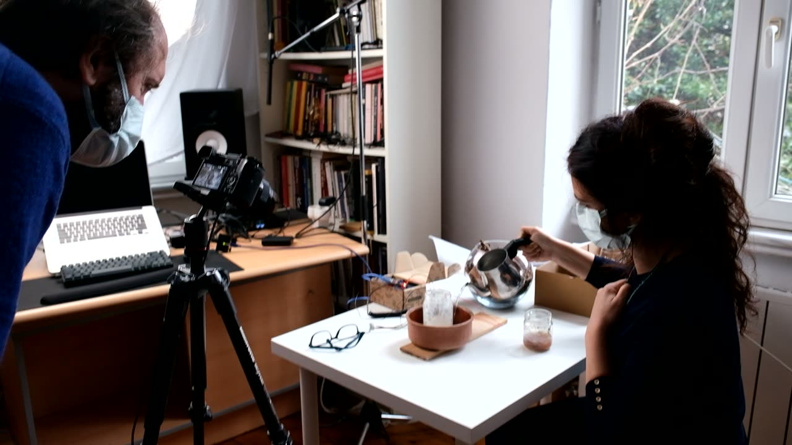
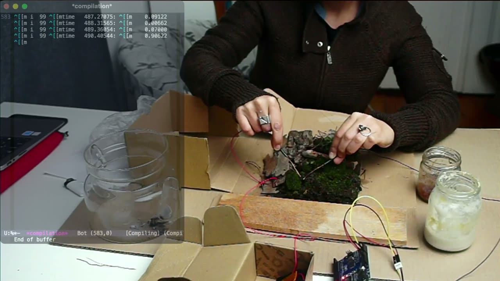
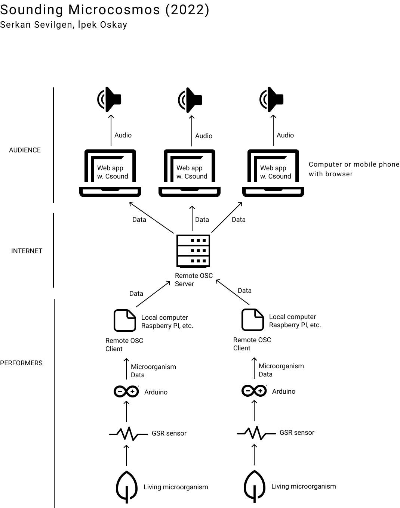

Sounding Microcosmos (2022)
Sounding Microcosmos: Real-time, telematic, biodata sonification
Authors
Serkan Sevilgen
Computer programmer and electroacoustic music composer
https://serkansevilgen.com
Serkan Sevilgen holds a BA in Music Technology and MA in Sonic Arts. He attended composition courses by leading contemporary composers. He uses several programming languages for sound synthesis and composition. His musical works and research focus on stochastic procedures, sonification, networked music systems, live coding, and soundscape. His music (including collaborations) is being performed at international festivals, radio shows, symposiums, and conferences including Network Music Festival, ISMIR Conference, Festival Ecos Urbanos (co-hosted by Stanford University’s CCRMA), International Conference on Live Coding. He co-started Soundinit (http://soundinit.org/) with the aim of creating collective sound works and raising awareness for the sonic environment through soundwalks and concerts. He is a member of the Istanbul Coding Ensemble (ICE) which has a focus on improvisation with musical algorithms using 'just-in-time' programming techniques and real-time communication with ad-hoc network music systems.
İpek Oskay
Sociologist and environmental activist
https://sesol.org
Ipek Oskay is a Ph.D. student in Sociology at the University of Alberta. She has developed an online interactive sound-map platform as a medium of politics of commons and community (sesol.org). In Canada, she worked as the editorial assistant for the Journal of Space and Culture. She is currently employed for the Just Powers: Feminist Energy Futures Research and iDOC project, and editing a video-art/documentary film on Street Petrocultures: Kolkata. In Turkey, she worked as a freelance researcher and consultant for several projects in national and international organizations. She has also been working for many local environmental and community rights organizations, cooperatives, and collectives. She is also trained in photography, anthropological documentary, and sound media.
Description
The proposed sound installation aims to investigate the relationship between humans and the environment through technology and music. Biodiversity loss is usually underlined as the result of climate change while mycorrhizae networks and phytoplankton are the main organisms responsible for carbon reduction (sequestration) and dependent on the protection of animals, land, and flora in their habitat. Similarly, these organisms have never attracted or common governmental sense attention as species for common good, not even as species under threat. Our work on various colonies of micro individuals – i.e fungi (including mold) and algae, as sourdough, mother of vinegar, food mold, and so on – underlines the external conditions that stress themselves and consequently our ecosystem. Every organism has a definite range of light, humidity, heat, and noise levels as ideal livable conditions. Beyond such levels, they respond with a stress reaction.
In our work, the micro-level living organisms serve as a musical interface via a GSR (Galvanic Skin Response) sensor which is usually used to detect changes in human emotional states. With the GSR sensor, we can follow slight variations in electrical resistance in the environment that micro-organisms reside. An Arduino board collects the data from the sensor and transmits it to the computer with Python code. Remote OSC (a Node.js library written by Serkan Sevilgen to enable hassle-free data and code sharing between computer musicians. https://github.com/serkansevilgen/remote-osc) handles the sending of the data to the web-based sound installation platform. On the web application, the Csound-based digital instruments wait for the incoming data to perform sonification in real-time and in the browser without any audio streaming between the data source and audience. The audience goes to the URL of the web application and they will not need to install any software or make any changes to their computer/browser settings. The web app will also include the documentation of the project with images, video, and text.
Technical information and system requirements
Feasibility
People around the world will experience the sonic outcome of the data generated by living micro-organisms. We will deploy the web application on a server and provide the URL. We require no technical support from the organizers
The technology we use in this project is developed by one of the authors Serkan Sevilgen and it was presented in the Hybrid Live Coding Interfaces Workshop section of the ICLC 2021 - International Conference on Live Coding in Chile. You can find the program here https://hybrid-livecode.pubpub.org/workshop2021 and the video recording of the talk here https://www.youtube.com/watch?v=LDQ1PMqZowQ. Serkan Sevilgen is one of the co-authors (with Scott Wilson and Konstantinos Vasilakos) of the paper presented at ICLC 2021 that Remote OSC is mentioned in the future works section 1. You can find the video of the talk here https://www.youtube.com/watch?v=4GVMkly5QUk Serkan Sevilgen presented A TELEMATIC PERFORMANCE WITH WORC which uses the same technology at the 18th Brazilian Symposium on Computer Music. You can find the details in the festival program here https://compmus.org.br/2021/festival/ and live web audio application here http://sbcm2021.serkansevilgen.com/
Media

▶
▶

Compliance with Ethical Standards
In our work, we need to subject the microenvironment with microorganisms that we created at home to various extreme conditions. Our motivation is two-fold: 1- Trying to acquire the response (if any) of the environment against climate change; carbon emissions, increasing extreme weather, sound, and chemical pollution; 2- Estimating the minimum and maximum of the data to help us in the sonification process. Our intervention to the strictly controlled ecosystem is monitored for its electrical activity. Even though their activity is slowing down or speeding up due to conditions we believe there are no terminal consequences. All the organisms are homegrown by the artists for this project. We used human protection devices like masks to secure our own health.
Footnotes
Wilson, Scott, Vasilakos, Konstantinos & Sevilgen, Serkan. (2022, January 20). Live Coding in the Time of COVID. International Conference on Live Coding (ICLC), Valdivia, Chile. https://doi.org/10.5281/zenodo.5885652
↩